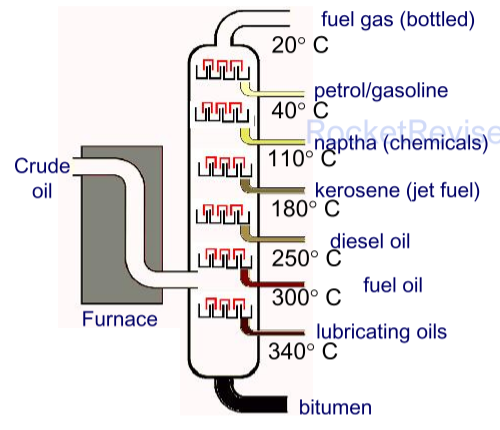

Introductory organic chemistry and alkanes
Organic chemistry is the chemistry of carbon compounds, and there are millions of them. This topic gives you the tools to handle them all: how to draw and name organic molecules, how isomers arise, and how chemists describe the way bonds break. Then it puts those tools to work on the simplest family, the alkanes: where they come from, why they make good fuels, what pollution they cause, and how they react with halogens by a free-radical chain reaction.
Hazards and risks
Many organic compounds catch fire easily or are toxic, so before any practical you assess what could go wrong. Two words are used in a precise way, and the exam expects you to keep them apart.
- Hazard: a substance or a procedure that has the potential to cause harm. Bromine is a hazard because it is toxic and corrosive, whatever you do with it.
- Risk: the chance that harm will actually happen when the hazardous substance or procedure is used in a particular way. The risk depends on how much you use, how concentrated it is and what precautions you take.
So the hazard of a chemical is fixed, but the risk is something you can change. A dilute solution, or a small amount, carries a much lower risk than the pure substance, even though the hazard is the same. Risk can be reduced by:
- working on a smaller scale, or with more dilute solutions;
- taking precautions matched to the particular hazard (see the table);
- choosing a different method or a less hazardous substance that does the same job.
| Hazard | Example in the lab | Typical precaution |
|---|---|---|
| Flammable | hexane, ethanol | no naked flames nearby; heat with a water bath or electric heater |
| Toxic | bromine, methanol | use a fume cupboard; wear gloves; avoid skin contact |
| Corrosive | concentrated acids and alkalis | wear goggles and gloves |
| Irritant | dilute acids and alkalis | wear goggles |
| Harmful | many organic liquids | avoid breathing vapour or swallowing; wash hands afterwards |
| Oxidising | potassium manganate(VII) | keep away from flammable and easily oxidised materials |
| Carcinogenic | some halogenoalkanes | replace with a safer substance where possible; fume cupboard; gloves |
In a risk-assessment question, name the specific hazard and give a precaution that deals with that hazard. "Wear goggles" is not a sensible precaution for a flammable liquid; "keep away from naked flames" is.
Formulae of organic compounds
Carbon forms four covalent bonds and can bond to other carbon atoms to make chains and rings of almost any length. That is why there are so many organic compounds. Start with two basic words:
- Hydrocarbon: a compound made of hydrogen and carbon only.
- Saturated: contains only single carbon–carbon bonds. Unsaturated: contains at least one C=C double bond (or a triple bond).
The same molecule can be written in several ways, each showing a different amount of detail. You need to be able to read and write all of them.
| Type of formula | What it shows | Butane |
|---|---|---|
| Molecular | the actual number of atoms of each element in one molecule | C4H10 |
| Empirical | the simplest whole-number ratio of atoms of each element | C2H5 |
| General | an algebraic formula that fits every member of a homologous series | CnH2n+2 (all alkanes) |
| Structural | the minimum detail needed to show how the atoms are arranged, carbon by carbon, with no bonds drawn | CH3CH2CH2CH3 or CH3(CH2)2CH3 |
| Displayed | every atom and every covalent bond | see the diagram below |
| Skeletal | only the carbon skeleton (as lines) and the functional groups; carbon atoms and the hydrogens on them are left out | a zig-zag of three lines |
Skeletal formulae
Skeletal formulae are quick to draw and easy to read once you are used to them. Each line is a C–C bond, a carbon atom sits at every corner and at the end of every line, and you assume each carbon has enough hydrogens to make four bonds. Atoms other than C and H, and the hydrogens attached to them (as in –OH), are always written in.
When you draw a displayed formula, count the bonds round every carbon: there must be exactly four. Missing hydrogens and five-bonded carbons are the commonest ways to lose a mark. In a displayed formula, the O–H bond of an alcohol must be drawn too.
Homologous series and functional groups
- Homologous series: a family of compounds with the same functional group and the same general formula. Each member differs from the next by a CH2 group.
- Functional group: the atom or group of atoms that gives a compound its characteristic chemical reactions. Molecules with the same functional group react in the same ways.
Because the functional group decides how a molecule reacts, all members of a series have similar chemical properties. Their physical properties, such as boiling temperature, change gradually along the series, because each extra CH2 adds eight electrons and makes the molecule a little longer, so the London forces between molecules get a little stronger each time.
| Series | Functional group | Name ending or prefix | General formula | Example |
|---|---|---|---|---|
| Alkanes | C–C and C–H only | -ane | CnH2n+2 | propane, CH3CH2CH3 |
| Alkenes | C=C | -ene | CnH2n | propene, CH2=CHCH3 |
| Halogenoalkanes | –X (X = F, Cl, Br, I) | prefix fluoro-, chloro-, bromo-, iodo- | CnH2n+1X | 1-bromopropane, CH3CH2CH2Br |
| Alcohols | –OH | -ol (prefix hydroxy-) | CnH2n+1OH | propan-1-ol, CH3CH2CH2OH |
| Aldehydes | –CHO (C=O at the end of a chain) | -al | CnH2nO | propanal, CH3CH2CHO |
| Ketones | C=O inside a chain | -one | CnH2nO | propanone, CH3COCH3 |
| Carboxylic acids | –COOH | -oic acid | CnH2n+1COOH | propanoic acid, CH3CH2COOH |
Aldehydes and ketones share the general formula CnH2nO, and alkenes share CnH2n with cycloalkanes. The same general formula does not always mean the same series: the functional group decides.
Naming organic compounds
Every name is built from three parts: a stem that says how many carbons are in the longest chain, an ending (suffix) for the main functional group, and prefixes for branches and other groups, each with a number to say where it is.
| Carbons | 1 | 2 | 3 | 4 | 5 | 6 | 7 | 8 | 9 | 10 |
|---|---|---|---|---|---|---|---|---|---|---|
| Stem | meth | eth | prop | but | pent | hex | hept | oct | non | dec |
| Branch (alkyl group) | methyl, –CH3 | ethyl, –C2H5 | propyl, –C3H7 | a branch is named from the stem with -yl on the end | ||||||
The rules
- Find the longest continuous carbon chain. It may bend round corners in the drawing. This gives the stem.
- Number the chain from the end that gives the main functional group the lowest number. If there is no functional group needing a suffix, number from the end that gives the branches the lowest numbers.
- Name each branch or substituent as a prefix with its position number. Use di-, tri-, tetra- when the same group appears more than once, and give every position (2,2-dimethyl, not 2-dimethyl).
- Put different prefixes in alphabetical order, ignoring di-, tri- and so on (bromo before chloro before methyl).
- Punctuation: commas between numbers, hyphens between numbers and words.
- Leave out numbers that cannot vary: propanone, ethanoic acid and methylpropane need no numbers, because there is only one possible position.
Name CH3CH(CH3)CH2CH(C2H5)CH3. Draw it out first: a chain of five carbons, with a methyl on carbon 2 and an ethyl on carbon 4.
Look for the longest chain. Following the chain into the ethyl group gives six carbons, not five. So the stem is hex and the compound is a hexane.
The ethyl group was never really a branch: it is part of the longest chain. A "branch" of two or more carbons on the second-to-last carbon is a warning sign that you have missed the longest chain.
Along this six-carbon chain there are now two methyl branches. Numbering from one end puts them on carbons 2 and 4; from the other end, on 3 and 5. Choose the lower set, 2 and 4.
Two methyl groups means "dimethyl", and both positions are given: 2,4-dimethylhexane.
Names with functional groups
- Halogenoalkanes: the halogen is always a prefix: 2-chloropropane, 1-bromo-2-methylpropane. With two different halogens, list them alphabetically: CH2ClCHBrCH3 is 2-bromo-1-chloropropane (numbering 1,2 beats 2,3).
- Alkenes: the position of the double bond is the lower-numbered of its two carbons: CH3CH=CHCH3 is but-2-ene. Two double bonds make a diene, and an "a" is added to the stem: penta-1,3-diene.
- Alcohols: the position number goes just before -ol: butan-2-ol, 2-methylpropan-2-ol. Two or three –OH groups make a diol or triol: ethane-1,2-diol, propane-1,2,3-triol.
- Aldehydes and carboxylic acids: the functional group is always at the end of the chain, so its carbon is carbon 1 and needs no number: butanal, 2-methylpropanoic acid. An acid group at both ends gives a dioic acid: ethanedioic acid, HOOC–COOH.
- Ketones: the C=O is inside the chain. From five carbons up you need a number: pentan-2-one and pentan-3-one are different compounds.
When to keep the "e" of the stem. If the suffix starts with a vowel, drop the final e of the alkane name: propanol, ethanoic acid, butanal. If the suffix starts with a consonant (including di- and tri-), keep the e: ethane-1,2-diol, propanedioic acid, pentane-2,4-dione.
When a molecule has more than one functional group, the one highest in this order takes the suffix and sets the numbering. The others become prefixes (–OH becomes hydroxy-), except that a C=C keeps its "-en-" inside the name.
carboxylic acid > aldehyde > ketone > alcohol > alkene > halogenoalkane
| Structural formula | Name | Why |
|---|---|---|
| CH3CH(OH)CH2CH(CH3)CH3 | 4-methylpentan-2-ol | number from the end nearer the –OH, so it gets 2, not 4 |
| CH2=CHCH2CH(OH)CH3 | pent-4-en-2-ol | the alcohol outranks the alkene, so –OH gets the lower number |
| CH3CH(OH)COOH | 2-hydroxypropanoic acid | the acid takes the suffix and carbon 1; –OH becomes a prefix |
| CH3CH(OH)CH2CHO | 3-hydroxybutanal | the aldehyde carbon is carbon 1 |
| CH2=CHCOOH | propenoic acid | the C=C can only be between carbons 2 and 3, so no number is needed |
Structural isomers
Structural isomers have the same molecular formula but a different structural formula: the same atoms are joined up in a different order. Isomers are different compounds with different properties. Structural isomerism can arise in three ways, although the Edexcel specification simply calls them all structural isomers.
- Chain isomers: the carbon skeleton is different (straight or branched in different ways).
- Position isomers: the same functional group sits at a different position on the same skeleton.
- Functional group isomers: the atoms are arranged to give a different functional group altogether.
Two more functional group pairs worth knowing: ethanol, CH3CH2OH, and methoxymethane, CH3OCH3, are both C2H6O; and hex-1-ene, CH2=CHCH2CH2CH2CH3, and cyclohexane are both C6H12, because a ring uses up the same two hydrogens as a double bond.
To find all the isomers of a formula, work systematically: start with the longest chain, then shorten it by one carbon and try the branch in every position, and so on. Check every candidate by naming it. Two drawings with the same name are the same compound, not two isomers.
A second kind of isomerism, stereoisomerism (same structural formula, different arrangement in space), turns up with alkenes in the next topic.
Types of reaction and how bonds break
Classifying reactions
| Type | What happens | Example |
|---|---|---|
| Addition | two molecules join to make a single product | ethene + bromine → 1,2-dibromoethane |
| Substitution | one atom or group is replaced by another | methane + chlorine → chloromethane + hydrogen chloride |
| Elimination | a small molecule (such as H2O or HBr) is removed from a larger one, leaving a C=C | bromoethane → ethene + HBr |
| Oxidation | in organic chemistry, gain of oxygen or loss of hydrogen | ethanol → ethanal |
| Reduction | gain of hydrogen or loss of oxygen | ethene + hydrogen → ethane |
| Hydrolysis | a molecule is split by reaction with water | bromoethane + water → ethanol + HBr |
| Polymerisation | many small monomer molecules join into a long chain | ethene → poly(ethene) |
Homolytic and heterolytic fission
A covalent bond is a shared pair of electrons. When it breaks, those two electrons can be shared out in two ways, and the two ways lead to completely different kinds of reaction.
- Homolytic fission: each atom takes one electron from the bond. This makes two free radicals. It is shown with half-headed ("fish-hook") arrows, each moving a single electron.
- Heterolytic fission: one atom takes both electrons. This makes a positive ion and a negative ion. It is shown with a full curly arrow, which moves a pair of electrons. The more electronegative atom usually takes the pair.
Three kinds of attacking species
- Free radical: a species with an unpaired electron, shown by a dot, such as Cl• or •CH3. Radicals have no charge but are very reactive, because the unpaired electron "wants" a partner.
- Electrophile: an electron-pair acceptor. Electrophiles are attracted to regions of high electron density, such as a C=C bond. They are positive ions or have a δ+ atom: H+, Brδ+ in a polarised Br2 molecule.
- Nucleophile: an electron-pair donor. A nucleophile has a lone pair it can use to form a new covalent bond with a δ+ carbon: OH−, CN−, NH3, H2O.
Curly arrows show where electrons move. A full arrow moves a pair of electrons and always starts at a source of electrons: a lone pair or the middle of a bond. It ends where the pair goes: between two atoms to make a new bond, or on an atom that takes the pair when a bond breaks. A half-headed arrow moves one electron.
Alkanes: structure and physical properties
Alkanes are saturated hydrocarbons with the general formula CnH2n+2. Every carbon is tetrahedral, with bond angles of 109.5°, so a "straight" chain is really a zig-zag. Cycloalkanes, such as cyclohexane, are rings of CH2 groups with the general formula CnH2n.
Carbon and hydrogen have very similar electronegativities, so C–H bonds are almost non-polar, and alkane molecules are non-polar. The only forces between alkane molecules are London forces (instantaneous dipole–induced dipole forces, see Topic 7). When an alkane boils, it is these weak forces that are overcome. The strong covalent bonds inside the molecules do not break. Two factors control how strong the London forces are:
- Chain length. Each extra CH2 adds 8 electrons. More electrons give larger instantaneous dipoles, so the London forces are stronger and more energy is needed to separate the molecules: the boiling temperature rises steadily along the series.
- Branching. Isomers have the same number of electrons, but a branched molecule is more compact, closer to a sphere. Neighbouring molecules cannot lie alongside each other, so there is a smaller area of contact and fewer points where the molecules are close. The London forces are weaker and the boiling temperature is lower.
For an "explain the difference in boiling temperatures" answer about isomers, make three points: (1) same number of electrons, so any difference is not due to that; (2) the straight-chain molecules have a larger surface area of contact, so stronger London forces; (3) more energy is needed to overcome them, so the boiling temperature is higher. Always say "London forces between molecules": the covalent bonds do not break.
Alkanes are not very reactive. Their C–C and C–H bonds are strong (about 347 and 413 kJ mol−1), and because the bonds are almost non-polar there are no δ+ or δ− sites to attract nucleophiles or electrophiles. Alkanes do two important things: they burn, and they react with halogens in ultraviolet light.
Crude oil and fractional distillation
Crude oil (petroleum) is a mixture of hydrocarbons, mostly alkanes, of many different chain lengths. On its own it is not much use. It is separated into fractions: mixtures of hydrocarbons with similar chain lengths and therefore similar boiling temperatures.

The crude oil is heated in a furnace until most of it vaporises, and the hot vapour is fed in near the bottom of the column.
There is a temperature gradient up the column: it is hottest at the bottom and coolest at the top. The vapours rise through trays with bubble caps and cool as they go.
Each hydrocarbon condenses when it reaches a tray cooler than its boiling temperature, and the liquid collected there is drawn off as a fraction.
Small molecules have few electrons and weak London forces, so they have low boiling temperatures and rise to the top before they condense (or leave as gas). Large molecules have strong London forces and condense near the bottom. The heaviest part never vaporises and leaves at the bottom as a residue (bitumen).
This is a physical process: only the London forces between molecules are overcome and re-formed. No covalent bonds break.
| Fraction | Approximate chain length | Main use |
|---|---|---|
| Refinery gas | C1–C4 | bottled gas for heating and cooking |
| Petrol (gasoline) | C5–C10 | fuel for cars |
| Naphtha | C8–C12 | feedstock for the chemical industry |
| Kerosene (paraffin) | C10–C16 | jet fuel |
| Diesel (gas oil) | C14–C20 | fuel for diesel engines |
| Fuel oil and lubricating oil | C20–C40 | ships and power stations; lubricants and waxes |
| Bitumen | above C40 | road surfaces and roofing |
Cracking and reforming
Fractional distillation produces more of the long-chain fractions than anyone wants, and not enough of the short-chain fractions such as petrol, which are in high demand. Two processes fix the mismatch and also make more useful molecules.
Cracking
Cracking breaks C–C bonds in long-chain alkanes to make shorter alkanes and alkenes (sometimes hydrogen as well). Because strong covalent bonds have to be broken, cracking is a chemical change and needs a lot of energy. Industry mostly uses catalytic cracking, with a zeolite catalyst at around 450 °C; thermal cracking uses much higher temperatures and pressures instead.
Why crack? The shorter alkanes are used in petrol, and they are worth more than the long-chain fractions. The alkenes are even more valuable: unlike alkanes they are reactive, so they are the starting materials for polymers such as poly(ethene) and for chemicals such as ethanol and ethane-1,2-diol.
\[ \mathrm{C_{10}H_{22} \rightarrow C_8H_{18} + C_2H_4} \qquad \mathrm{C_{16}H_{34} \rightarrow C_8H_{18} + C_6H_{12} + C_2H_4} \]There is no single "right" answer when you crack an alkane: the bonds break at random. In the exam you will be told one product, or the products, and asked to balance the equation. Check it by counting carbons and hydrogens on each side. The alkane products have 2n + 2 hydrogens, the alkenes 2n.
Reforming
Reforming turns straight-chain alkanes into branched alkanes and cyclic hydrocarbons (cycloalkanes and arenes, such as benzene), usually over a platinum catalyst. Branched and cyclic hydrocarbons burn more smoothly in a car engine and are less likely to ignite too early (knocking), so they give a more efficient fuel with a higher octane number. Reforming to a ring releases hydrogen:
\[ \mathrm{C_6H_{14} \rightarrow C_6H_{12} + H_2} \qquad\quad \mathrm{C_6H_{14} \rightarrow C_6H_6 + 4H_2} \]The first equation makes cyclohexane, the second benzene. Turning heptane into 2,2,3-trimethylbutane is also reforming: both are C7H16, so nothing else is produced.
Alkanes as fuels: combustion
A fuel is a substance that releases heat energy when it burns. Alkanes make good fuels: they are easy to transport, and their combustion is very exothermic, because the bonds made in CO2 and H2O are much stronger than the bonds broken in the alkane and in oxygen.
Complete combustion
With plenty of oxygen, the carbon ends up as carbon dioxide and the hydrogen as water.
Write the formulae: C8H18 + O2 → CO2 + H2O.
Balance carbon first: 8 C atoms make 8CO2.
Balance hydrogen next: 18 H atoms make 9H2O.
Balance oxygen last, because O2 is an element and you can use any amount of it. On the right: 8 × 2 + 9 = 25 O atoms, which is 12½ O2.
\[ \mathrm{C_8H_{18}(l) + 12\tfrac{1}{2}O_2(g) \rightarrow 8CO_2(g) + 9H_2O(l)} \]Doubling everything gives whole numbers: 2C8H18 + 25O2 → 16CO2 + 18H2O. In general, CnH2n+2 needs (3n + 1)/2 moles of O2.
Incomplete combustion
If oxygen is limited, as in a poorly ventilated gas fire or inside a car engine, some carbon ends up as carbon monoxide or as carbon (soot) instead. Less energy is released per mole of fuel, because the carbon is not fully oxidised.
\[ \mathrm{CH_4(g) + 1\tfrac{1}{2}O_2(g) \rightarrow CO(g) + 2H_2O(l)} \qquad \mathrm{CH_4(g) + O_2(g) \rightarrow C(s) + 2H_2O(l)} \]Why carbon monoxide is so dangerous
CO is colourless and odourless, so you cannot tell it is there. It binds to the haemoglobin in red blood cells more strongly than oxygen does, so the haemoglobin can no longer carry oxygen around the body. A build-up from a faulty heater in a closed room can kill.
Pollution from burning fuels
| Pollutant | Where it comes from | Effect |
|---|---|---|
| Carbon monoxide, CO | incomplete combustion | toxic: stops haemoglobin carrying oxygen |
| Carbon (soot) and other particulates | incomplete combustion, especially in diesel engines | breathing problems and lung disease; global dimming (particles reflect sunlight) |
| Unburnt hydrocarbons | fuel that passes through an engine without burning | help to form photochemical smog; some are carcinogenic |
| Oxides of nitrogen, NO and NO2 (NOx) | nitrogen and oxygen from the air react at the high temperature and spark inside an engine | toxic; NO2 forms acid rain and smog |
| Sulfur dioxide, SO2 | sulfur impurities in fuels, especially coal and heavy oil | acid rain; breathing problems |
| Carbon dioxide, CO2 | all combustion of carbon-based fuels | greenhouse gas: contributes to global warming and climate change |
Nitrogen oxides. The N≡N triple bond is very strong, so N2 normally does not react with oxygen. In an engine the temperature is so high, and the spark supplies so much energy, that some does:
\[ \mathrm{N_2(g) + O_2(g) \rightarrow 2NO(g)} \qquad\quad \mathrm{2NO(g) + O_2(g) \rightarrow 2NO_2(g)} \]Sulfur dioxide. Sulfur in the fuel burns to SO2, which dissolves in rainwater and is oxidised to sulfuric acid, giving acid rain that damages buildings, forests and lakes. Most sulfur is now removed from petrol and diesel at the refinery.
\[ \mathrm{S(s) + O_2(g) \rightarrow SO_2(g)} \]Catalytic converters
A catalytic converter in a car exhaust removes CO, NOx and unburnt hydrocarbons by turning them into CO2, N2 and H2O. It is a ceramic honeycomb coated with a thin layer of platinum, palladium and rhodium. The honeycomb gives a very large surface area, so a small mass of these expensive metals catalyses a lot of gas.
\[ \mathrm{2CO(g) + 2NO(g) \rightarrow 2CO_2(g) + N_2(g)} \] \[ \mathrm{C_8H_{18}(g) + 25NO(g) \rightarrow 8CO_2(g) + 12\tfrac{1}{2}N_2(g) + 9H_2O(g)} \]A catalytic converter does not remove carbon dioxide: it actually turns CO and hydrocarbons into more CO2. Nor does it deal with sulfur dioxide.
Alternative fuels and carbon neutrality
Crude oil is a finite resource that took millions of years to form, so it will run out. Biofuels are fuels made from plants, which can be grown again each year, so they are renewable.
- Bioethanol is made by fermenting sugars from crops such as sugar cane or maize with yeast: C6H12O6(aq) → 2C2H5OH(aq) + 2CO2(g).
- Biodiesel is made by reacting vegetable oils (for example from rapeseed) with methanol, using an alkali as a catalyst.
An activity is carbon neutral if it gives no overall increase in the amount of carbon dioxide in the atmosphere. Biofuels are often described as close to carbon neutral. Follow the carbon in bioethanol to see why.
The crop takes in carbon dioxide as it grows, by photosynthesis:
\[ \mathrm{6CO_2 + 6H_2O \rightarrow C_6H_{12}O_6 + 6O_2} \]That is 6 CO2 absorbed for each glucose molecule.
Fermentation turns each glucose into two ethanol molecules and releases 2 CO2:
\[ \mathrm{C_6H_{12}O_6 \rightarrow 2C_2H_5OH + 2CO_2} \]Burning the two ethanol molecules releases 4 CO2:
\[ \mathrm{2C_2H_5OH + 6O_2 \rightarrow 4CO_2 + 6H_2O} \]Total released: 2 + 4 = 6 CO2, exactly the amount absorbed. On paper the fuel is carbon neutral.
In practice it is not quite: energy, mostly from fossil fuels, is used to make fertiliser, run farm machinery, transport the crop and distil the ethanol. All of that releases extra CO2.
So biofuels reduce net CO2 emissions compared with fossil fuels, but they are not completely carbon neutral.
| Advantages of biofuels | Disadvantages of biofuels |
|---|---|
| renewable, so they will not run out much lower net CO2 emissions than fossil fuels save crude oil for use as a chemical feedstock no risk of large oil spills | land used for fuel crops cannot grow food, which can push food prices up forests may be cleared to make farmland not fully carbon neutral (fertilisers, machinery, transport) older engines may need modifying to run on them |
Free-radical substitution of alkanes
In the dark, methane and chlorine do not react. In ultraviolet light (or sunlight) they react at room temperature, and a hydrogen atom on the methane is replaced by a chlorine atom:
\[ \mathrm{CH_4(g) + Cl_2(g) \xrightarrow{\text{UV light}} CH_3Cl(g) + HCl(g)} \]This is a substitution, and because it happens through free radicals it is called free-radical substitution. Bromine reacts with alkanes in exactly the same way. The mechanism has three stages.
Initiation. UV light provides the energy to break the Cl–Cl bond by homolytic fission, making two chlorine radicals:
\[ \mathrm{Cl_2 \rightarrow 2Cl^{\bullet}} \]Cl–Cl is the weakest bond present (242 kJ mol−1, against 413 kJ mol−1 for C–H), so UV breaks it and leaves the C–H bonds alone.
Propagation, step 1. A chlorine radical takes a hydrogen atom from a methane molecule, forming HCl and leaving a methyl radical:
\[ \mathrm{Cl^{\bullet} + CH_4 \rightarrow HCl + {}^{\bullet}CH_3} \]Propagation, step 2. The methyl radical takes a chlorine atom from a Cl2 molecule, forming the product and a new chlorine radical:
\[ \mathrm{{}^{\bullet}CH_3 + Cl_2 \rightarrow CH_3Cl + Cl^{\bullet}} \]Every propagation step has one radical on each side. The Cl• made in step 2 goes straight back into step 1, so one initiation can drive thousands of cycles: a chain reaction. Add the two propagation steps together and the radicals cancel, leaving the overall equation.
Termination. Whenever two radicals meet, their unpaired electrons pair up to form a covalent bond, and no new radical is made. This removes radicals and stops chains:
\[ \mathrm{Cl^{\bullet} + Cl^{\bullet} \rightarrow Cl_2} \qquad \mathrm{{}^{\bullet}CH_3 + Cl^{\bullet} \rightarrow CH_3Cl} \qquad \mathrm{{}^{\bullet}CH_3 + {}^{\bullet}CH_3 \rightarrow CH_3CH_3} \]The last step makes ethane, an impurity in the product. Write it with structural formulae (CH3CH3) so it is clear the two carbons have joined.
Applying the mechanism to other alkanes
The pattern is always the same: initiation splits the halogen; in propagation step 1 the halogen radical removes an H from the alkane, and in step 2 the alkyl radical takes a halogen atom from X2. For bromine and ethane:
\[ \mathrm{Br_2 \rightarrow 2Br^{\bullet}} \] \[ \mathrm{Br^{\bullet} + CH_3CH_3 \rightarrow HBr + {}^{\bullet}CH_2CH_3} \qquad \mathrm{{}^{\bullet}CH_2CH_3 + Br_2 \rightarrow CH_3CH_2Br + Br^{\bullet}} \] \[ \mathrm{{}^{\bullet}CH_2CH_3 + Br^{\bullet} \rightarrow CH_3CH_2Br} \qquad \mathrm{{}^{\bullet}CH_2CH_3 + {}^{\bullet}CH_2CH_3 \rightarrow CH_3CH_2CH_2CH_3} \]With propane, a hydrogen can be removed from an end carbon or from the middle carbon, so two different products form: 1-bromopropane and 2-bromopropane. To show substitution on the middle carbon, put the radical dot on that carbon:
\[ \mathrm{CH_3CH_2CH_3 + Br^{\bullet} \rightarrow HBr + CH_3\overset{\bullet}{C}HCH_3} \qquad \mathrm{CH_3\overset{\bullet}{C}HCH_3 + Br_2 \rightarrow CH_3CHBrCH_3 + Br^{\bullet}} \]Two common slips: making H2 instead of HCl in propagation step 1 (the halogen radical always takes the hydrogen, so the side product is always the hydrogen halide), and putting the radical dot on the wrong carbon when you are asked for a particular isomer.
Further substitution and the limits of the reaction
The chloromethane made in the first cycle still has C–H bonds, so a chlorine radical can attack it too:
\[ \mathrm{Cl^{\bullet} + CH_3Cl \rightarrow HCl + {}^{\bullet}CH_2Cl} \qquad \mathrm{{}^{\bullet}CH_2Cl + Cl_2 \rightarrow CH_2Cl_2 + Cl^{\bullet}} \]Repeating this can give CHCl3 and finally CCl4. Overall equations add up all the substitutions, with HCl always as the other product, never H2:
\[ \mathrm{CH_4 + 2Cl_2 \rightarrow CH_2Cl_2 + 2HCl} \qquad \mathrm{CH_4 + 4Cl_2 \rightarrow CCl_4 + 4HCl} \]Why free-radical substitution is a poor way to make one particular compound
It gives a mixture of products: further substitution (CH2Cl2, CHCl3, CCl4), substitution at different positions in longer chains (isomers), and termination products such as ethane or butane. The products have to be separated, and the yield of any one of them is low. Using a large excess of the alkane makes the monosubstituted product more likely, because a radical is then far more likely to meet an alkane molecule than a molecule that has already been substituted. An excess of halogen pushes the reaction towards full substitution.
Quick checks
A teacher uses 0.1 mol dm−3 sodium hydroxide instead of 2 mol dm−3 sodium hydroxide in a class practical. What has changed?
A hazard is a property of the substance, so sodium hydroxide is still corrosive or irritant. Using it more dilute reduces the chance and severity of harm, which is the risk.
What is the empirical formula of hexane?
Hexane is C6H14; dividing by the common factor 2 gives C3H7. C6H14 is the molecular formula and CnH2n+2 is the general formula.
What is the correct name of (CH3)2CHCH(CH3)CH2CH3?
The longest chain has five carbons, with methyl groups on carbons 2 and 3 when numbered from the end nearer the branches. Identical groups are combined with di- and every position is given. "2-ethyl…butane" misses the longest chain.
Which pair of compounds are functional group isomers?
Both are C3H6O, but one is an aldehyde and the other a ketone. The propanols are position isomers, butane and methylpropane are chain isomers, and ethane and ethene have different molecular formulae, so they are not isomers at all.
Pentane boils at 36 °C and 2,2-dimethylpropane at 10 °C. Which statement explains the difference?
They are isomers, C5H12, so they have the same number of electrons. The difference comes from shape: the compact, branched molecule touches its neighbours over a smaller area. No covalent bonds break on boiling, and both are non-polar.
Which equation correctly shows the complete combustion of propane?
3 C give 3CO2; 8 H give 4H2O; the right-hand side then has 6 + 4 = 10 O atoms, which is 5O2. The first option is incomplete combustion (and does not balance), and 8H2O would need 16 hydrogen atoms.
Which of these is a propagation step in the reaction of ethane with chlorine in UV light?
A propagation step has one radical on each side. The first option is initiation and the third is termination (two radicals in, none out). In the last option the chlorine radical would have to replace H directly, but the chlorine radical removes a hydrogen atom to form HCl.
Why does a catalytic converter use a ceramic honeycomb coated with a thin layer of platinum and rhodium?
The reactions happen on the surface of the metals, so a large area means fast conversion of CO, NOx and hydrocarbons, and a thin coating keeps the cost down. The converter makes CO2; it does not remove it.